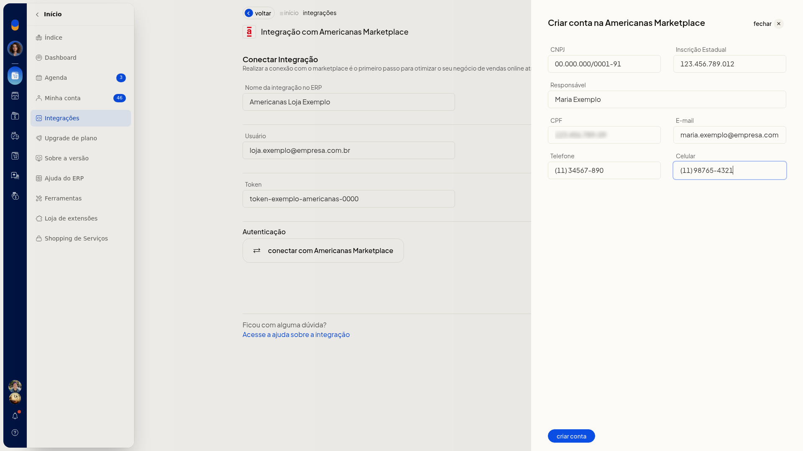

Integração com a Americanas
Importante
- Confirme o token com a equipe da Americanas Marketplace antes de conectar.
- Para criar a conta, tenha em mãos CNPJ, responsável, CPF, email, telefone e celular. A inscrição estadual também pode ser informada.
Instruções
Conectar uma conta já existente
-
Acesse Início > Integrações e abra Integração com Americanas Marketplace.
-
Em Conectar Integração, preencha Nome da integração no ERP, Usuário e Token. Em Usuário, use o email de acesso ao painel de Americanas Marketplace. Em Token, use o token verificado com a equipe da Americanas Marketplace.
-
Na seção Autenticação, clique em conectar com Americanas Marketplace.

Criar uma conta nova
Na mesma tela, o atalho aparece junto do texto Não possui uma conta da Americanas?.
- Em Conectar Integração, clique em + criar uma nova conta.
- No modal Criar conta na Americanas Marketplace, preencha os dados abaixo.
- Clique em criar conta. O ERP da Olist avisa que a conta foi criada e pede que você aguarde o contato da equipe da Americanas Marketplace para seguir com a integração.
Dados da empresa
- CNPJ: obrigatório.
- Inscrição Estadual: opcional.
Dados do responsável
- Responsável: obrigatório.
- CPF: obrigatório.
- E-mail: obrigatório.
- Telefone: obrigatório.
- Celular: obrigatório.
Resultado
Depois de criar a conta, aparece o alerta Sua conta na Americanas Marketplace foi criada com sucesso, com o pedido para aguardar o contato da equipe da Americanas Marketplace.
Informações adicionais
- A ajuda da integração abre pelo link Acesse a ajuda sobre a integração.